STORES Product Blog
https://product.st.inc/
こだわりを持ったお商売を支える「STORES」のテクノロジー部門のメンバーによるブログです。
フィード

ViewModel での複雑な状態管理への処方箋
STORES Product Blog
こんにちは！Android エンジニアの naberyo（@error96num）です。 私が現在開発に携わっている STORES モバイルオーダー では、モバイルオーダーから入った注文を飲食店のキッチンで管理するための「キッチンディスプレイアプリ」をネイティブアプリとして提供しています。*1 本記事では、このキッチンディスプレイアプリの ViewModel をリファクタした話について共有します。 背景 ─ 機能追加による UI のリッチ化 キッチンディスプレイアプリには、モバイルオーダーで入った注文を一覧表示する機能があります。これまでは即時注文（今すぐ受け渡す注文）しか扱わなかったため、画…
2時間前
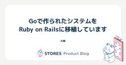
Goで作られたシステムをRuby on Railsに移植しています 112
112
STORES Product Blog
STORES でエンジニアをしている片桐です。 STORES では店舗運営に関するさまざまなプロダクトを提供しています。これらのプロダクトは元々別の会社で運営されてきた完全に異なるプロダクト群で、アカウント体系から全く異なるシステムになっていました。近年はこれらのシステムを本格的に統合する取り組みを進めてきており、その中で統合のためにいくつかのシステムが新たに作成されてきました。 ある程度統合が進み、うまくいったところ・いかなかったところが見えてきた中で、これまでに作ったシステムの技術選定・システムの役割に対する課題感が見えてきました。 現在弊社ではこの課題を解決していくプロジェクトを進めてい…
3日前
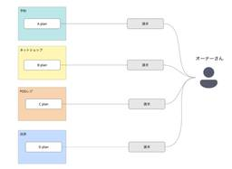
EC・POSレジのプラン購読の仕組みをZuoraに移行した話
STORES Product Blog
はじめに はじめまして。STORES でエンジニアをやっている id:shu-suzuki-1124 です。 競馬では例年より早く宝塚記念が開催されたため春のG1もすべて終わり、新馬戦や夏競馬が本格的に始まってきました。 未来への可能性に期待膨らむ新馬戦、波乱万丈で刺激的な夏競馬、私はG1も好きですがこの季節もまた別の趣があってとても好きです。 思えば私が STORES に入社したのも去年の夏頃でした。そして STORES で働いたこの1年はまさしく未来に胸踊らせつつ刺激的な1年だったと感じています。 なのでこの1年に郷愁を感じつつ、その中でも今年の1~3月で参画した STORES ネットショ…
3日前
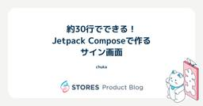
約30行でできる！Jetpack Composeで作るサイン画面
STORES Product Blog
はじめに こんにちは！ STORES 決済 でAndroidアプリの開発をしているchukaです。 最近は美味しいパンを食べることにハマっています。 美味しいパン屋さんを知っている方は、ぜひ教えてください 🥐 🍞 🥖 🥯 Jetpack Composeでサインをしよう みなさんは、クレジットカードでの支払い時にサインを求められた経験はありますか？ STORES 決済 でも、クレジットカードで決済されたとき、アプリ上でサインをしてもらう場合があります。*1 でも、Jetpack Composeでサイン画面を作るのってなんか難しそう・・・と思いませんか？(私は思っていました) 実はそのサイン画面、…
3日前
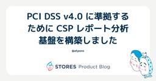
PCI DSS v4.0 に準拠するために CSP レポート分析基盤を構築しました 1
STORES Product Blog
STORES 技術推進本部の id:atpons です。普段は STORES 全体の技術課題をいい感じにしたり、パブリッククラウドの管理、運用をしています。 今回は STORES ネットショップで PCI DSS v4.0 に準拠するにあたり必要となった CSP レポートの分析システムについて、さまざまな検討を行った結果、内製することにした経緯を紹介します。 CSP レポートとは Content Security Policy（CSP）は、Web サイトのセキュリティを向上させるためのセキュリティ機構です。CSP ヘッダを設定すると、ブラウザ上で読み込まれるリソース（スクリプト、スタイルシート…
3日前
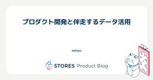
プロダクト開発と伴走するデータ活用 1
STORES Product Blog
はじめに こんにちは。STORES株式会社でデータアナリストをしています、satoyuです。 STORESでは2025年3月に新たな料金プランを発表・リリースしました。またリリースに合わせて、事業者がSTORES製品を使い始める際のオンボーディングフローを統合しました。これにより、各製品ごとの開設オンボーディングが不要になり、1つのSTORES製品として利用開始できる環境が整いました。 しかし、新しいオンボーディングフローの導入により、以前と比較して体験が悪化していないか、オンボーディング中に事業者の離脱がないかなど、プロダクトリリース後の評価において考慮すべき点が複数生じました。 このような…
3日前
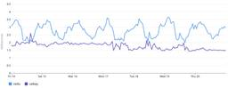
セッションストアをValkey Serverlessへ移行してみたら、パフォーマンスもコストも大きく改善した話
STORES Product Blog
こんにちは、技術推進本部のシムです。 今回は最近実施したセッションストアのValkey Serverless移行について、なぜ移行を決めたのか、実際の移行プロセスや成果、運用で得られた知見を紹介します。 ここでのセッションストアとは STORES ネットショップの本体は Rails で動いており、該当アプリケーションのセッションストアを指します。 元々は MemoryDB (with Redis OSS) をストレージとして利用しており、該当クラスタにはセッションに関係するデータも一部追加で保存されておりました。 なぜ Valkey Serverlessに移行したのか？ ここには Server…
3日前
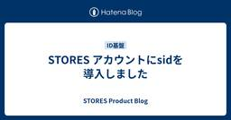
STORES アカウントにsidを導入しました 1
STORES Product Blog
こんにちは。エンジニアのokuboです。このブログではSTORES アカウントのsid導入およびsidを利用したBack-Channel logoutの実装について、実際の開発現場での課題や仕様、実装例、得られた知見を紹介します。 モチベーション STORESは複数の独立したサービスで構成されています。事業者様は、同一のSTORES アカウントでこれらのサービスにログインし、サービス間を遷移しながら日々の業務を行っています。 STORES アカウントによる認証機能は、STORESが自社開発しているID基盤システムによって提供しています。 STORES アカウントでは、サービス間を移動する際にロ…
3日前
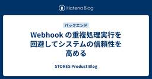
Webhook の重複処理実行を回避してシステムの信頼性を高める
STORES Product Blog
こんにちは、STORES ブランドアプリ や STORES ロイヤリティ の開発をしている ta-chibana です。 STORES では複数のサービスが通信しあうことで実現される機能が多くありますが、STORES で開発されたプロダクト同士の連携に限らず、Shopify などの外部サービスと連携する機能も存在します。 本記事では STORES での Shopify 連携で実装した Webhook の重複処理実行を回避する仕組みについて紹介します。 なお、STORES での Shopify 連携においては shopify_app gem を利用しているため、その前提での実装例となります。 W…
3日前
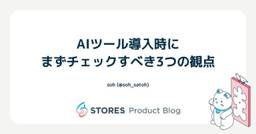
AIサービス導入時にまずチェックすべき3つの観点 30
STORES Product Blog
AI導入推進担当者が、AIサービス（特にAIを用いたコーディングツール）導入時にまずチェックすべき3つの観点をまとめています。
4日前
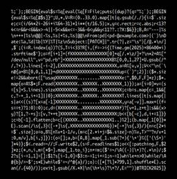
TRICK 2025 の mame のプログラムを語る 9
STORES Product Blog
こんにちは、遠藤（@mametter）です。RubyKaigi 2025 では、変なコードで競い合う TRICK 2025 を開催しました。あらためまして、たくさんの投稿をいただき、本当にありがとうございました。 いまさらですが、自分が書いたプログラムについて語りたくなったので語ります。 Most Useful github.com 概要 patch と diff をテーマとして、とにかくたくさんの要素を詰め込んだプログラムです。 patch コマンドとして動く そのまま patch ファイルとしても解釈できる 自分自身へのパッチを出力し、中心にある "p" のロゴを徐々に半回転して "d" …
4日前
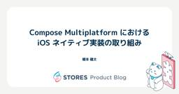
Compose Multiplatform における iOS ネイティブ実装の取り組み
STORES Product Blog
こんにちは。STORES でiOSエンジニアをしている榎本 (@enomotok_ )です。 STORES では、 KMP/CMP を用いて Android, iOS のマルチプラットフォームアプリ開発を行なっています。 *1 本記事では、Kotlin Multiplatform（KMP）と Compose Multiplatform (CMP) を用いたアプリ開発において、iOS と Android 間で共通化が難しい処理をどのように設計・実装しているか、私たちのチームの事例を紹介します。 Kotlin の共通実装だけではカバーできない領域をどのように解決するか KMP/CMP を活用するこ…
4日前
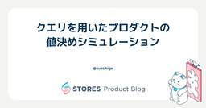
クエリを用いたプロダクトの値決めシミュレーション 1
STORES Product Blog
こんにちは、STORES でデータアナリストをしているsueshigeです。 STORES では2025/3から従来のプロダクト単位の料金プランとは大きく異なる複数プロダクトをまとめた新料金プランの提供を開始しました。 料金プランを決定するにあたり月額料金と決済手数料を合わせて値決めをするのは難しい問題で、インプット項目の集計からシミュレーションまでをスプレッドシートなどを使って人力で行う方法には限界がありました。そこでクエリを用いることで値決めのシミュレーションを効率的に行うことができたのでその方法を共有します。 シミュレーション方法 プロダクトの値決めで重要となるのは新しい料金体系をいくら…
5日前
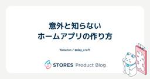
意外と知らないホームアプリの作り方 1
STORES Product Blog
夏のような日差しの日があったり、大雨の日があったり、忙しい天候ですね。子どもたちと昆虫採集に行く機会が増えてきたのですが、飛んでいる虫はなかなか捕まえられず、思い付きで虫取り網をDIYしました。アルミワイヤーで枠を作り、網部分は洗濯ネットをぬい付けました。作ってみるとわかるのですが、市販の網は枠と持ち手の接合部分にかなりの工夫がありました。自作の方はまだまだ改良の余地ありです。 こんにちは。STORES 決済 でAndroidアプリエンジニアをしている Yamaton です。今回は、とあるプロジェクトの過程で調査した「ホームアプリの作り方」をまとめます。調査しているとホームアプリの仕組みがわか…
5日前
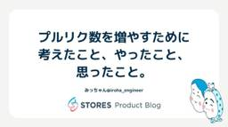
プルリク数を増やすために考えたこと、やったこと、思ったこと。 1
STORES Product Blog
開発速度を上げよう こんにちは、STORES 決済 Androidエンジニアのみっちゃんです。 2025年上期、STORES テクノロジー部門では、目標の一つに「開発速度向上」を掲げていました。 この方針を踏まえ、個人としてどのような目標を立てるか考えた際、自分のプルリクエスト（以下、PR）数が少ないことを以前から課題に感じていたこともあり、「PR数の増加」を個人目標として設定することにしました。 具体的には、100件のPR提出を目指すという数値目標を立てました。 ちなみに私の去年下期(2024/07/01~2024/12/31)のPR数は49個です。 これを読んでいる人の中には「え？あなた本…
6日前
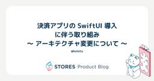
決済アプリの SwiftUI 導入に伴う取り組み 〜 アーキテクチャ変更について 〜 3
STORES Product Blog
はじめに @kotetu こと栗山です。今年の 4 月に STORES に入社しました。今回が、入社して初めての担当記事となります。 今回は、筆者が開発を担当している STORES 決済 の iOS アプリ (以後、 "決済アプリ" と記載) の開発チームで現在進行形で実施している取り組みについて、筆者が対応したとある案件で実際に経験したことや入社 2 ヶ月半の立場からの所感をベースに紹介します。 とある画面のアーキテクチャ変更対応 決済アプリでは、2025 年から SwiftUI の導入を徐々に進めており、一部画面については画面実装が SwiftUI ベースとなっています。 SwiftUI …
6日前
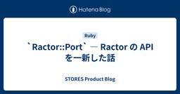
`Ractor::Port` ― Ractor の API を一新した話 15
STORES Product Blog
本稿では、Ruby で並列処理を手軽に実現するための機構 Ractor の API について、以前から気になっていた部分を最近になって一新し、`Ractor::Port` というものを導入したので、その内容をご紹介します。
6日前

生成AI×社会課題 Tech Conferenceに協賛します
STORES Product Blog
STORES は6月21日（土）に開催される 生成AI×社会課題 Tech Conference に協賛します！ wake-career-socialai-hackathon-2025.studio.site スポンサーブース 当日は STORES のスポンサーブースを出展します。 ブースでは、STORES を利用されているhanami sembeiさんのお菓子を配布します！STORES の実際の活用事例として、オーナーさんの商品をお楽しみいただければと思います。 ジェンダーダイバーシティAWARD 2025 授賞式 また、同会場で開催される「ジェンダーダイバーシティAWARD 2025 授賞…
10日前
たまにはTLVのLについて語る
STORES Product Blog
はじめに はじめまして、こんにちは。STORES 決済 でAndroidエンジニアをしている n-seki です。 というわけでAndroidの技術記事……を書こうと思ったのですが、決済に携わっているエンジニアとして、たまにはTLVについて書いてみようと思います。 TLVとはなにか？ TLVはデータ構造の一種で、Tag（またはType）, Length, Value の頭文字をとった命名です。Tagはタグ、Lengthは長さ、Valueは値。そのままですね。 決済とTLVにどんな関係があるか、不思議に思われる方もいらっしゃるかもしれません。 一口に決済と言っても昨今はさまざまな決済手段が存在し…
10日前
WWDC25に参加してきました！〜現地参加編〜
STORES Product Blog
こんにちは！ STORES レジ・STORES 予約 の開発をしている iOS / Android エンジニアの @satoryo056 です。 なんとこの度 WWDC に当選しまして、約1週間アメリカに出張してきました！ 本記事では、WWDC25 に参加してきた様子を現地の写真を添えながら振り返りたいと思います。 WWDCについて WWDC (Worldwide Developers Conference) は、Apple が毎年開催する開発者向けのカンファレンスです。 今年は現地時間6月9〜13日（日本時間6月10〜14日）にオフライン・オンラインのハイブリッドで開催され、新 OS やその…
12日前
iOS アプリからローカルサーバーへ接続する道のり
STORES Product Blog
STORES ブランドアプリの iOS アプリ側を開発している Megabits です。 STORES ブランドアプリはアプリとサーバーの連動で成り立っています。なので、アプリを開発するとき、サーバーへ接続してデバッグすることがほどんどです。逆に、バックエンドを開発する際、アプリを操作して動作確認することも多いです。Staging のサーバーや Production のサーバーに接続してテストすることができます。アプリにはこのような DebugView が存在していて、 Staging と Production を切り替えられます。 環境切り替え画面 しかし、現状だとローカルでバックエンドのコ…
13日前
2ヶ月の『開発合宿』で見えたもの - 出社を銀の弾丸にしないため
STORES Product Blog
はじめに STORES株式会社でエンジニアをしています id:HolyGrail です 2025年2月から4月頭にかけて、私たちのチームは普段のリモートワーク主体の働き方から一転、全員出社での開発を行いました。ミッションは、3月27日にリリースするSTORES の新プランの開発。店舗運営に必要な複数のサービスをまとめた新プランを低価格でリリースしました。 私たちのチームが担当したのは、複数のサービスダッシュボードを横断的に、違和感なく利用できる体験を提供するシステムの開発。1月に集まったばかりの新チームで、コミュニケーション密度を高めながら「3月末にリリースする」という明確なゴールに向かう必要…
13日前
STORES 決済 アプリを譲渡したら最後に落とし穴があった
STORES Product Blog
もう夏なんですかねー。 夏大好きです。 こんにちは！ STORES 決済 モバイルチームの Engineering Manager、 iOS アプリ・SDKの開発を担当しております。 いわいです。 なぜアプリ譲渡したのか STORES 株式会社は、 複数の事業会社が集まった会社です。 STORES 決済 iOS アプリは 元々は前身である コイニー株式会社が 運営していたので、 App Storeでも、 Coiney, inc. の Apple Developer Account からリリースされていましたが 2025年4月、ようやく アプリ譲渡をおこない STORES, inc. からリリー…
14日前
STORES レジで遭遇した 12 桁バーコード読み取りの謎
STORES Product Blog
こんにちは、 yu です。前回はインターン生としてブログを書きましたが、今回は内定者アルバイトとしてブログを書いていきます。 STORES レジには、会員バーコードやアイテムのバーコードを読み込むスキャン機能があります。 しかし、そのスキャン機能では 12 桁のバーコードが読めないという問題が発生していました。 今回は、なぜ 12 桁のバーコードが読めなかったのかとその解決法について、バーコードの規格とともに紹介します。 発生した問題と原因 問題 STORES レジに登録する商品には、オーナーさまがお好みのバーコード番号を設定できます。 しかし、アイテムに 12 桁のバーコードを設定し、そのバ…
17日前
潜在的なデータ競合をなくすための取り組み
STORES Product Blog
こんにちは、STORES 決済 でiOSアプリを開発している @nekowenです。 マルチスレッドプログラミングは難しいと言われますが、その理由の1つとして、データ競合(data race)があります。 データ競合は複数のスレッドが同じ共有データに同時にアクセスし、少なくとも1つが書き込みを行う場合に発生します。これは主に予期せぬ動作やクラッシュを引き起こす厄介なバグの原因となります。 そのため、データ競合を起こさないよう NSLock や DispatchQueue を用いた排他処理が必要となってきますが、これは実装や考慮漏れを引き起こすリスクがあります。 一例として、STORES 決済 …
18日前
TokyoWomen.rb #1に参加しました
STORES Product Blog
こんにちは、技術広報のえんじぇるです。 STORES は、2025年3月1日に開催されたTokyoWomen.rb #1にスポンサーとして協賛しました！ tokyowomenrb.connpass.com 現地でスポンサーLTをさせていただく機会があったので『私が STORES を推す理由』と題して、STORES のあれこれを紹介しました。 photo by えりりんさん なぜスポンサーをすることにしたのか STORES は2023年にダイバーシティ方針を掲げ、その中で「2030年までに、エンジニア職における女性採用比率を30％以上にする」ことを、未来の STORES に欠かせない定量目標とし…
21日前
AndroidプロジェクトにBitriseを導入する手順
STORES Product Blog
最近DIYで作ったのはブックカバーです。レザークラフトは綺麗な縫い目が重要です。それには等間隔に穴をあける道具が必要なのですが、手元になかったので代わりにフォークを使いました。手触りの良い素材を選んだので、本を開くのが楽しみになりました。 こんにちは。STORES 決済 でAndroidアプリエンジニアをしている Yamaton です。今回は、既存のBitrise環境にあたらしいAndroidプロジェクトを追加する流れをまとめます。「既存プロジェクトにはBitriseが入ってて便利だけど、新規プロジェクトはどんな手順でBitriseを導入するんだろう」という方の参考になれば幸いです。 この記事…
24日前
JJUG CCC 2025 Springに STORES から2名が登壇＆ランチスポンサーとして協賛します
STORES Product Blog
こんにちは、技術広報のえんじぇるです。 6月7日に開催されるJJUG CCC 2025 Springに STORES から2名が登壇＆ランチスポンサーとして協賛します！ ccc2025spring.java-users.jp 登壇者の紹介 STORES から2名が登壇します。 障害を回避する HttpClient 再入門 時間：10:00 - 10:20 場所：Room L 発表者：uskey512 本セッションでは、普段何気なく直接(あるいは間接的に)利用しているHttpClientについていくつかの主要な実装を紹介しつつ少し深堀りして、より安全に使うためにどのような点を考慮すべきかなどを紹…
24日前
STORES レジがSwift6対応を完了するまで
STORES Product Blog
この記事は「STORES レジにおけるSwift6移行対応」の完結編です。今回は、対応箇所が特に多かったモジュールにフォーカスし、チームで分担して対応する過程をご紹介します。Swift6対応がこれからの方はもちろん、すでに対応済みの方にとっても、中規模から大規模の技術刷新を行う際の参考になるはずです。
24日前
Cursorで変わるPdMの仕事と役割【ep.35 #論より動くもの .fm】
STORES Product Blog
CTO 藤村がホストするPodcast、論より動くもの.fmの第35回を公開しました。今回はプロダクトマネージャーの西岡と、LLMを使ったプロダクトとAIとPdMの仕事について話をしました。 creators.spotify.com 論より動くもの.fmはSpotifyとApple Podcastで配信しています。フォローしていただくと、新エピソード公開時には自動で配信されますので、ぜひフォローしてください。 最近気になる音楽 藤村：こんにちは、論より動くもの.fmです。 論より動くもの.fmは STORES のCTO 藤村が技術や技術じゃないことについてざっくばらんに話すポッドキャストです。…
25日前